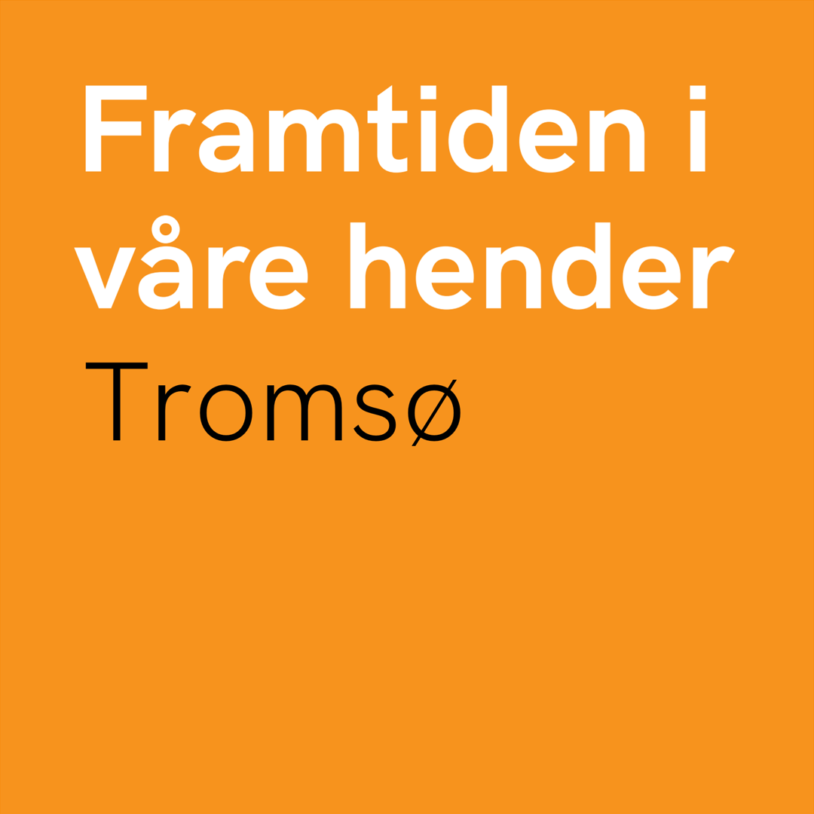

Bærekraftig Tromsø-guide (beta)
For å gjøre det enklere for deg å finne aktører i Tromsø som driver bærekraftig.
Her finner du bruktbutikker, utleie, utlån, reparatører, (etterhvert opplevelser)
navigate_before